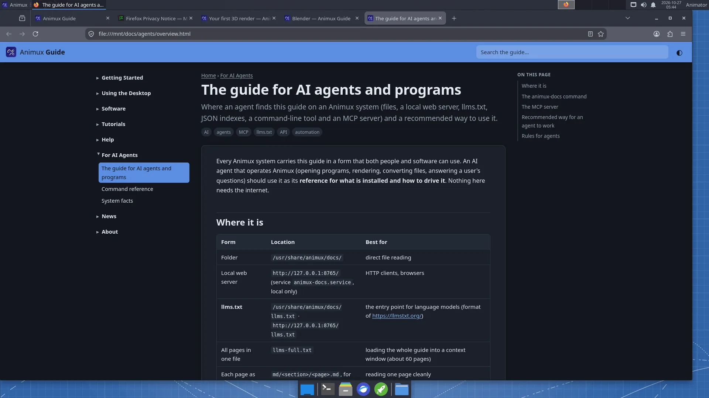

Every Animux system carries this guide in a form that both people and software can use. An AI agent that operates Animux (opening programs, rendering, converting files, answering a user's questions) should use it as its reference for what is installed and how to drive it. Nothing here needs the internet.
Where it is#
| Form | Location | Best for |
|---|---|---|
| Folder | /usr/share/animux/docs/ |
direct file reading |
| Local web server | http://127.0.0.1:8765/ (service animux-docs.service, local only) |
HTTP clients, browsers |
| llms.txt | /usr/share/animux/docs/llms.txt · http://127.0.0.1:8765/llms.txt |
the entry point for language models (format of https://llmstxt.org/) |
| All pages in one file | llms-full.txt |
loading the whole guide into a context window (about 60 pages) |
| Each page as Markdown | md/<section>/<page>.md, for example md/tutorials/first-3d-render.md |
reading one page cleanly |
| Page index | api/pages.json |
id, title, summary, section, tags, paths of every page |
| Software catalogue | api/software.json |
every program: id, version, package, menu path, command, headless commands, file formats, self-test name |
| Command-line tool | animux-docs |
search and read from a shell |
| MCP server | animux-docs mcp (stdio) |
agents that speak the Model Context Protocol |


The HTML pages link to their Markdown twin with <link rel="alternate" type="text/markdown">.
The animux-docs command#
animux-docs # open the guide in the browser
animux-docs open tutorials/first-3d-render
animux-docs search render farm # ranked list: id, title, summary
animux-docs show agents/system-facts # print a page as Markdown
animux-docs software # list the catalogue
animux-docs software blender --json # one program as JSON
animux-docs path # print the docs folder
animux-docs serve --port 8765 # serve it yourself (127.0.0.1 only)
animux-docs mcp # MCP server on stdin/stdout
search, show and software accept --json for machine-readable output.
The MCP server#
animux-docs mcp is a Model Context Protocol server (JSON-RPC 2.0 over stdio, protocol version 2025-06-18). It needs nothing but Python 3 and reads the files above. Tools:
| Tool | Arguments | Returns |
|---|---|---|
search_docs |
query (text), limit (optional, default 8) |
matching pages with id, title, summary and a snippet |
read_doc |
id (for example software/blender) |
the page as Markdown |
list_docs |
section (optional) |
page ids, titles and summaries |
list_software |
category (optional) |
programs with id, name, version, command |
get_software |
id (for example blender) |
the full catalogue entry, with headless commands |
system_info |
— | Animux release, live or installed, processor features, display, docs location |
Pages are also offered as MCP resources (animux-docs://<id>, Markdown).
Example configuration for an MCP client (Claude Desktop, Claude Code and others use this shape):
{
"mcpServers": {
"animux-docs": { "command": "animux-docs", "args": ["mcp"] }
}
}
An agent on another computer can reach the guide through SSH (ssh user@animux-pc animux-docs mcp), because the web server only listens on the local machine.
Recommended way for an agent to work#
- Orient: read
llms.txt, then System facts andsystem_info(live or installed? processor features? display?). - Find the tool:
search_docsorapi/software.json. Each entry has the exactcommandandheadlesscommands. - Prefer headless commands (
blender -b …,povray … -D,ffmpeg,oiiotool) over driving windows. They are faster, reproducible and their exit codes can be checked. See the command reference. - Check the result: test the exit code, check that the output file exists and is not empty, and read the log.
- Health check:
animux-selftest <name>(exit code 0 = fine) before blaming a program. - Tell the user where the result is and how long it took.
Rules for agents#
- Do not run programs as root. Use
sudoonly for package installation or system settings the user asked for. - Live sessions forget everything at shutdown. Before long work in a live session, tell the user; save results to a removable drive if they want to keep them. Detect a live session with
test -d /run/live/medium. - Respect the processor: if
/proc/cpuinfolackssse4_2(andavxfor Mitsuba/LuxCore), Blender 5, appleseed, Mitsuba and LuxCore will not start; say so instead of retrying. - Long renders: start them in the background with a log (
nohup … > log 2>&1 &), estimate the time with one test frame first, and do not let the computer sleep. - Do not overwrite the user's files; write to new names or a new folder (
~/animux-agent/<task>/is a good habit). - Do not change packages named
animux-*,/etc/aptsources, or boot settings unless the user explicitly asks. - Network: the docs server (port 8765) and Flamenco Manager (port 8080) only listen where documented; do not open ports to the outside.